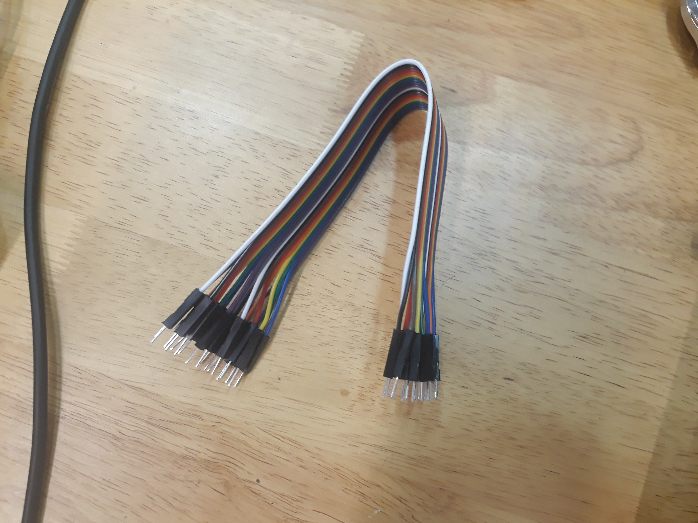
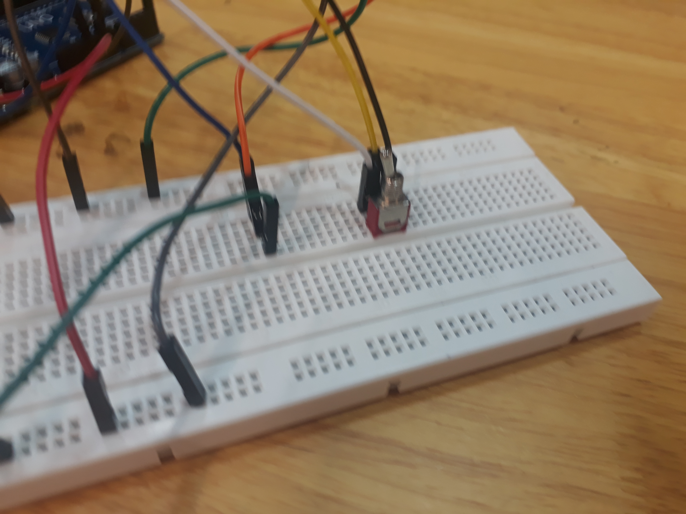

TinkerCAD Simulation
To test our circuitry and coding, we used TinkerCAD, a free online CAD tool by Autodesk.
We first drew the circuit diagram on a piece of paper.

After that, we set out to build our first circuit on TinkerCAD.
However, it did not work as planned. Some of the trouble we encountered are:
1) The servo motor did not
return to the original position when needed.
2) The servo motor only turns a small angle before stopping.
After consultation with our supervising lecturer, Mr Steven Chew, we managed to fixed the problem. It turns out there
are some bugs in our code. We debug the code and it runs prefectly.
We then modify the circuit to include two servo motors and this time, taking from the lessons learnt from the previous
circuit, the modifications runs smoothly. The image below shows the final circuit diagram.

Actual Circuitry
Getting The Necessary Components
After Mr Henry gave us the electrical components needed, we set out to do our circuitry on the breadboard. However, due to the lack of male to male jumper wires, we encountered difficulties connecting the circuits together. Therefore, we head down to Sim Lim Square to buy both the rain sensor and the male to male jumper wires.
Circuit Testing
After every component has been collected/brought, we start connecting the circuit together according to our circuit diagram shown above. A senior recommended us to just power the servo motors using arduino. Therefore, we decided to power the servo motors using breadboard in parallel. We first tried to just use the toggle switch and it worked.
We then decided to test out the rain sensor to see how it works. We connected the analog output of the sensor to an analog input pin in the arduino and connected a digital output pin of the arduino to the LED light. We found out that the wetter the rain sensor is, the lower is the analog reading of the pin. Therefore, we adapted by channging both the threshhold value and using "less than" instead of "more than" to trigger the servo motor to close the windows.
Circuit Assembly
After tesitng, we finally assembled the circuit. However, things did not go as planned. The servo motors did not turn even if we set it to turn manually. We tried reconnecting the wires but it still did not work.We also realised that the analog pins is picking up random values. At first we are not sure why but we realised it is because of floating voltage. We managed to solve the problem by grounding the pin we are using.
However, the servo motor still did not worked as intended We thought that maybe the servo motors is not supplied with enough power and we realised there are 2 5v pins in the arduino board. So, since we have spare breadboard available, we decided to use both the pins. One of the pins is used to power the servo motors while the other one to power our rain sensor and toggle switch. It worked initially but then it stopped working. We touched the board and realised it is very hot. This is when we realised we fried our board. However, we are forunate that the board did not fry. We then decided to use back our original connection. We realised there was a bug in the code where we set the condition to HIGH instead of LOW as it should be. We therefore debug the code and this time it worked as intended.
We took a video to show that it worked and how it works.
Circuit to drive the windows
The source code is also available below.
Arduino Source Code
Mechanical Components
After completing the circuit, we set out to do the mechanical part of
the prototype. We thought of the idea of just attaching the window directly
to the servo motors. We were at first skeptical of whether it works as the torque may not be enough but
notheless, we decided to try the idea. We drew the drawing of the window on AutoCAD before sending it
to the laser cutting machine. In our first attempt, the dimensions of the windows were wrong. We realised
that we dimensioned the windows wrongly. So, we redimenioned the windows and cut the windows again. This
time, we get the dimensions correct.
As we have no other means to temporarily attach the window to the servo motor, we tie the window and servo
motors together using jumper wires. To our surpise, it actually works! The window did turn when it is
required.
We 3d printed 4 bracket support structures and laser cut a wall from a recommendation from Mr Chew, an EA Lecturer. The wall was too short so we
decided to put our two only breadboards on top of each other to make up for the height difference. Moreover, one of our servo motors
experienced vibration at the 0 degrees(Open Position) which we are unsure why and have troubleshooted many times but are unable to come to a solution.
We both decided to solve the issue another day and focus more on the beautification on the product to make it more presentable when we present it to the
EA lecturers on the due date.
Completed Prototype

On 8/4/2019, we completed our prototype. We encountered problems along the way such as the servo motor stalling which we realise is due to the switch not being
compatible with the breadboard. We tried attaching it to female-male jumper wires but it produced the same results, but Ahmad suggested that we change the
breadboard, it worked much better than the previous board but it does produce the same exact problems at some times, due to the switch. We then beautified our
prototype to give a general idea of how it worked, we laser cutted some acryllic pieces to act as the wall and used hot glue to attach the servo motors to the board.
One of the servo motors still vibrates which we are still trying to fix and hopefully will be repaired when school reopens.
During our long semester holidays, we learnt quite a lot of coding and using machineries such as the laser cutter and 3d printer. The project was really an eye
opener on what to expect as we start our journey in the Engineering Academy, that we have to learn everything from scratch and be willing to take risks to learn
what is outside of our comfort zone.
Below is a video of our completed prototype in action.
Completed Prototype in action
Future Plans
We both hope that we can build an actual product out of this prototype and commercialise it in the future. We aim to help lessen the effort needed in doing daily household chores so that people can focus more on other important tasks such as schoolwork or be granted more time to rest and relax.